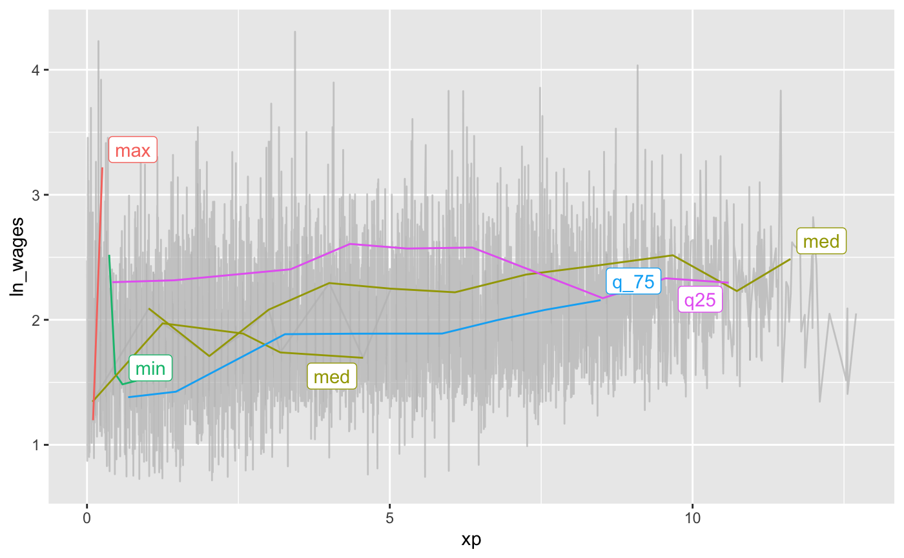
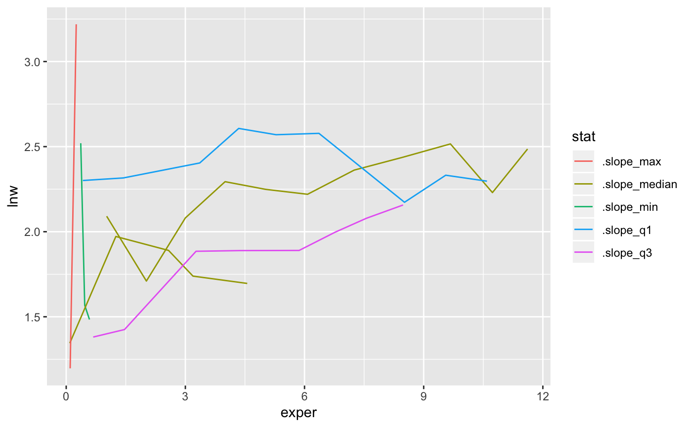
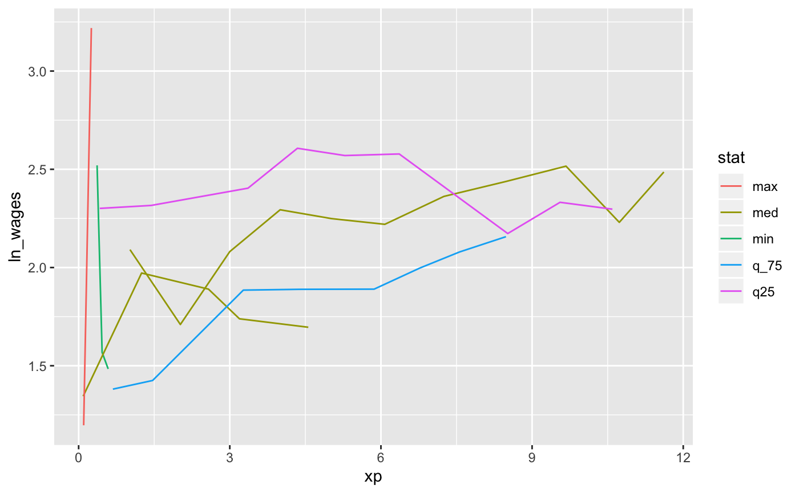

Finding summary keys
find-summary-keys.RmdThis vignette unpacks how to find interesting individuals.
Let’s say we calculate a slope for each individual key, using keys_slope():
And we want to know those keys that are nearest to some set of summary statistics of the slope. Let’s say the five number summary:
summary(wages_slope$.slope_xp)
#> Min. 1st Qu. Median Mean 3rd Qu. Max. NA's
#> -4.57692 -0.00764 0.04796 0.06235 0.09447 13.21569 38If want to find those individuals that have slopes near these values.
We can do this using keys_near(), which returns those nearest to some summary statistics. In this case, it is the five number summary, which is a list of functions, given by l_five_num. But you could provide your own list of functions.
wages_slope_near <- wages_slope %>%
keys_near(key = id,
var = .slope_xp)
wages_slope_near
#> # A tibble: 6 x 5
#> # Groups: stat [5]
#> id .slope_xp stat stat_value stat_diff
#> <int> <dbl> <chr> <dbl> <dbl>
#> 1 7918 -4.58 min -4.58 0
#> 2 2594 -0.00768 q25 -0.00769 0.0000127
#> 3 2305 0.0480 med 0.0480 0.0000498
#> 4 10380 0.0479 med 0.0480 0.0000498
#> 5 12178 0.0946 q_75 0.0947 0.0000579
#> 6 12455 13.2 max 13.2 0We can then join this information back against the data and plot those interesting individuals:
wages_slope_near %>%
left_join(wages_ts, by = "id") %>%
ggplot(aes(x = xp,
y = ln_wages,
group = id,
colour = stat)) +
geom_line()
You could also, with a bit of work, show these lines against the background using gghighlight
library(gghighlight)
wages_ts %>%
left_join(wages_slope_near, by = "id") %>%
as_tibble() %>%
ggplot(aes(x = xp,
y = ln_wages,
group = id,
colour = stat)) +
geom_line() +
gghighlight(!is.na(stat))
#> Warning: You set use_group_by = TRUE, but grouped calculation failed.
#> Falling back to ungrouped filter operation...
#> label_key: stat
Implementation
This section describes the general format for how this method is implemented.
To get the data into the right format, there are a few steps.
First, we need to get the data into a format where we have all the statistics that we are interested in, along with the id, and the statistic of interest.
We can fit a linear model for each key in the dataset using key_slope().
wages_slope <- key_slope(wages_ts, ln_wages ~ xp)
wages_slope
#> # A tibble: 888 x 3
#> id .intercept .slope_xp
#> <int> <dbl> <dbl>
#> 1 31 1.41 0.101
#> 2 36 2.04 0.0588
#> 3 53 2.29 -0.358
#> 4 122 1.93 0.0374
#> 5 134 2.03 0.0831
#> 6 145 1.59 0.0469
#> 7 155 1.66 0.0867
#> 8 173 1.61 0.100
#> 9 206 1.73 0.180
#> 10 207 1.62 0.0884
#> # … with 878 more rowsWe can then perform a summary of the statistic of interest, in this case the slope.
wages_slope_all_stats <- wages_slope %>%
mutate_at(.vars = vars(.slope_xp),
.funs = list(.slope_min = b_min,
.slope_max = b_max,
.slope_median = b_median,
.slope_q1 = b_q25,
.slope_q3 = b_q75)) %>%
select(id,
starts_with(".slope"))
wages_slope_all_stats
#> # A tibble: 888 x 7
#> id .slope_xp .slope_min .slope_max .slope_median .slope_q1 .slope_q3
#> <int> <dbl> <dbl> <dbl> <dbl> <dbl> <dbl>
#> 1 31 0.101 -4.58 13.2 0.0480 -0.00769 0.0947
#> 2 36 0.0588 -4.58 13.2 0.0480 -0.00769 0.0947
#> 3 53 -0.358 -4.58 13.2 0.0480 -0.00769 0.0947
#> 4 122 0.0374 -4.58 13.2 0.0480 -0.00769 0.0947
#> 5 134 0.0831 -4.58 13.2 0.0480 -0.00769 0.0947
#> 6 145 0.0469 -4.58 13.2 0.0480 -0.00769 0.0947
#> 7 155 0.0867 -4.58 13.2 0.0480 -0.00769 0.0947
#> 8 173 0.100 -4.58 13.2 0.0480 -0.00769 0.0947
#> 9 206 0.180 -4.58 13.2 0.0480 -0.00769 0.0947
#> 10 207 0.0884 -4.58 13.2 0.0480 -0.00769 0.0947
#> # … with 878 more rowsWe then need to convert this into long format
wages_slope_all_stats_long <-
wages_slope_all_stats %>%
gather(key = "stat",
value = "stat_value",
-id,
-.slope_xp)
wages_slope_all_stats_long
#> # A tibble: 4,440 x 4
#> id .slope_xp stat stat_value
#> <int> <dbl> <chr> <dbl>
#> 1 31 0.101 .slope_min -4.58
#> 2 36 0.0588 .slope_min -4.58
#> 3 53 -0.358 .slope_min -4.58
#> 4 122 0.0374 .slope_min -4.58
#> 5 134 0.0831 .slope_min -4.58
#> 6 145 0.0469 .slope_min -4.58
#> 7 155 0.0867 .slope_min -4.58
#> 8 173 0.100 .slope_min -4.58
#> 9 206 0.180 .slope_min -4.58
#> 10 207 0.0884 .slope_min -4.58
#> # … with 4,430 more rowsWe can then calculate the difference between each stat and the slope, .slope_xp:
stats_diff <-
wages_slope_all_stats_long %>%
mutate(stat_diff = abs(.slope_xp - stat_value))
stats_diff
#> # A tibble: 4,440 x 5
#> id .slope_xp stat stat_value stat_diff
#> <int> <dbl> <chr> <dbl> <dbl>
#> 1 31 0.101 .slope_min -4.58 4.68
#> 2 36 0.0588 .slope_min -4.58 4.64
#> 3 53 -0.358 .slope_min -4.58 4.22
#> 4 122 0.0374 .slope_min -4.58 4.61
#> 5 134 0.0831 .slope_min -4.58 4.66
#> 6 145 0.0469 .slope_min -4.58 4.62
#> 7 155 0.0867 .slope_min -4.58 4.66
#> 8 173 0.100 .slope_min -4.58 4.68
#> 9 206 0.180 .slope_min -4.58 4.76
#> 10 207 0.0884 .slope_min -4.58 4.67
#> # … with 4,430 more rowsWith stats diff, we can then group by the stat, and find return those rows with the smallest difference between the statistic and the value:
top_stats_diff <-
stats_diff %>%
group_by(stat) %>%
top_n(-1,
wt = stat_diff)
top_stats_diff
#> # A tibble: 6 x 5
#> # Groups: stat [5]
#> id .slope_xp stat stat_value stat_diff
#> <int> <dbl> <chr> <dbl> <dbl>
#> 1 7918 -4.58 .slope_min -4.58 0
#> 2 12455 13.2 .slope_max 13.2 0
#> 3 2305 0.0480 .slope_median 0.0480 0.0000498
#> 4 10380 0.0479 .slope_median 0.0480 0.0000498
#> 5 2594 -0.00768 .slope_q1 -0.00769 0.0000127
#> 6 12178 0.0946 .slope_q3 0.0947 0.0000579top_stats_diff %>%
left_join(wages, by = "id") %>%
ggplot(aes(x = exper,
y = lnw,
group = id,
colour = stat)) +
geom_line()
We can see that we get the same output using keys_near():
wages_ts %>%
key_slope(ln_wages ~ xp) %>%
keys_near(key = id,
var = .slope_xp) %>%
left_join(wages_ts, by = "id") %>%
ggplot(aes(x = xp,
y = ln_wages,
group = id,
colour = stat)) +
geom_line()